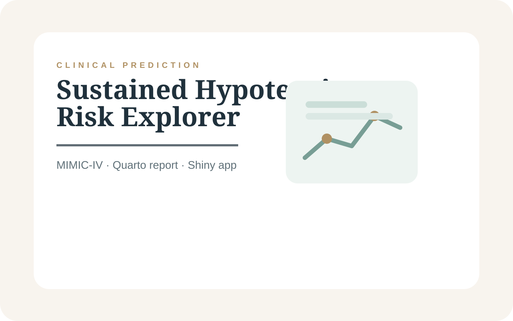

Clinical data product
ICU Hypotension Risk Explorer
A clinical prediction project using early physiologic and laboratory data from MIMIC-IV to support sustained hypotension risk stratification. The portfolio page includes a static preview of the Shiny workflow because GitHub Pages cannot run Shiny server code directly.
Live Shiny deployment requires a Shiny server and the model/data artifacts referenced by app.R. This portfolio uses a static preview and direct source links.

- RoleAuthor, analysis, report, and Shiny prototype
- ScopeCohort construction, temporal window design, feature engineering, model evaluation, and app interface
- ModelsLogistic regression, Random Forest, and XGBoost
- App structureCohort Explorer, Patient Explorer, and ML App tabs
Selected visuals
Inside the work
